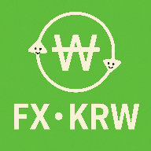

JPY/TWD 換 KRW 判斷器
PWA 可安裝 / 離線可用
即時台幣／韓元換算
韓元 (KRW)
➡
台幣 (TWD)
台幣 → 韓元 匯率（每 1 台幣可換幾韓元）
現場看板上的「TWD → KRW」數字。
日幣 → 韓元 匯率（每 1 日圓可換幾韓元）
現場看板上的「JPY → KRW」數字。
你的日幣成本（台幣/日圓）
你買到日幣現鈔的成本。
你想換的韓元金額（KRW，可選）
計算
清除